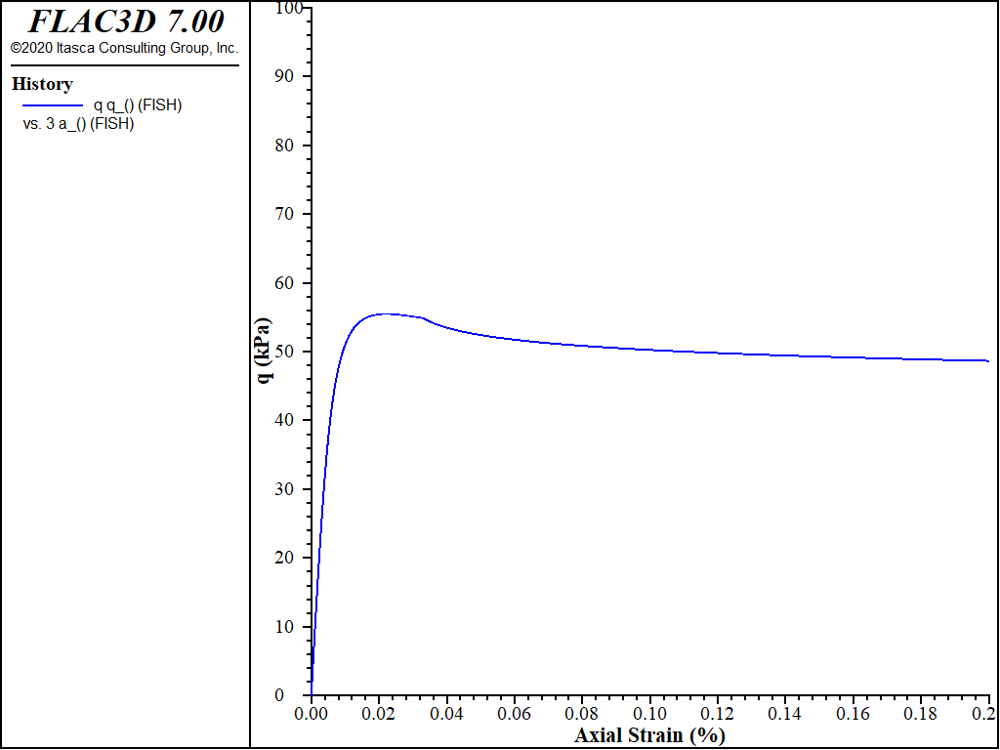
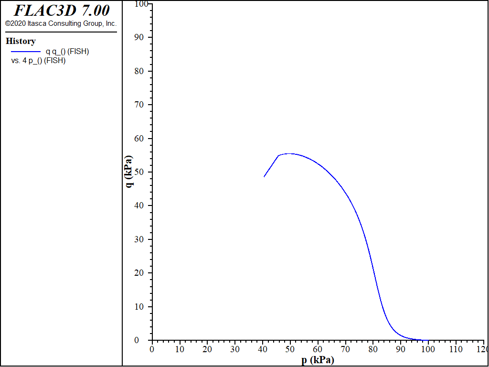

Soft-Soil-Creep 模型：三轴固结不排水加载
注意
本示例的项目文件可在 FLAC3D 中查看/运行。[1] 该项目的主数据文件见本示例末尾（main data files）。
本示例为恒定应变率的三轴固结不排水加载，在 2160 分钟内达到最大应变 20%。 假定黏土的初始各向同性（OCR = 1）有效应力为 10 kPa，初始 OCR 为 6（因此先期固结压力为 60 kPa）。 本示例使用固定的蠕变时步 0.216 min。 输入特性列于下表：
\(\lambda^*\) 0.106 \(\kappa^*\) 0.016 \(v\) 0.25 \(\phi\) 30° \(\mu^*\) 0.004 \(\tau\) 0.7（min） \(K_{nc}\) 0.62
材料特性与对比文献（Stolle, Vermeer, & Bonnier, 1999）中给出的相容。
假定黏土为正常固结，初始固结应力为 100 kPa。 然后在不排水条件下对黏土进行三轴加载。 模拟中采用了自动蠕变时步控制，如数据文件所示。
FLAC3D 模拟的结果示于 图 1（Figure 1） 和 图 2（Figure 2）， 与采用有限元框架的对比文献中的结果吻合良好。 正如观察到和预期的那样，偏剪应力（q）增大，有效平均压力（p）稳定下降，直到达到 Mohr-Coulomb 剪切破坏线。 达到该线后，由于蠕变引起的收缩，应力路径沿 Mohr-Coulomb 剪切破坏线向下移动， 在 图 1（Figure 1） 的 q 与应变曲线中表现为应变软化。 值得注意的是，即使在加载初期，FLAC3D 模拟也显示出非常光滑的曲线。
参考文献
Stolle, D. F., Vermeer, P. A., & Bonnier, P. G. “Time integration of a constitutive law for soft clays,” Communications in Numerical Methods in Engineering, 15(8), 603-609 (1999).


图 1：q 与竖向应变的关系。


图 2：q 与 p 的关系。
数据文件
model new
model large-strain off
model configure creep
;
[global cs0 = -100.0]
[global rate = 0.2/2160.0]
[global loadtime = 2160.0]
;
zone create brick size 1 1 1
zone face skin
zone cmodel assign soft-soil-creep
zone property lambda-modified 0.106 kappa-modified 0.016 poisson 0.25
zone property coefficient-normally-consolidation 0.62 ...
over-consolidation-ratio 1.0
zone property friction=30.0 cohesion 0 dilation 0
zone property time-reference 0.7 index-creep 0.004
zone property stress-1-effective=[cs0] stress-2-effective=[cs0] ...
stress-3-effective=[cs0]
;
zone face apply velocity-x=0.0 range group 'west'
zone face apply velocity-y=0.0 range group 'south'
zone face apply velocity-z=0.0 range group 'bottom'
zone initialize stress xx [cs0] yy [cs0] zz [cs0]
;
[global zp = zone.head]
[global gp = gp.find(8)]
fish define q_
global q_ = zone.stress.xx(zp) - zone.stress.zz(zp)
global a_ = -gp.disp.z(gp)
global p_ = -(zone.stress.xx(zp) + zone.stress.yy(zp) + ...
zone.stress.zz(zp))/3.0
end
;
model history name 'time' creep time-total
fish history name 'q' q_
fish history name 'a' a_
fish history name 'p' p_
;
zone face apply velocity-z [-rate] range group 'top'
zone face apply velocity-x [0.5*rate] range group 'east'
zone face apply velocity-y [0.5*rate] range group 'north'
;
model creep timestep automatic on
model creep timestep starting 1e-10 maximum 0.1 latency 10
model solve creep time-total [loadtime]
;
model save 'triaxial_cu_ssc'
尾注
| [1] | 要在 FLAC3D 中查看该项目，请使用程序菜单。
⮡ FLAC |
| 这些内容对您有帮助吗？… 版权与免责声明 |
FLAC3D © 2019, Itasca | 原文更新于 2020 年 10 月 8 日 |